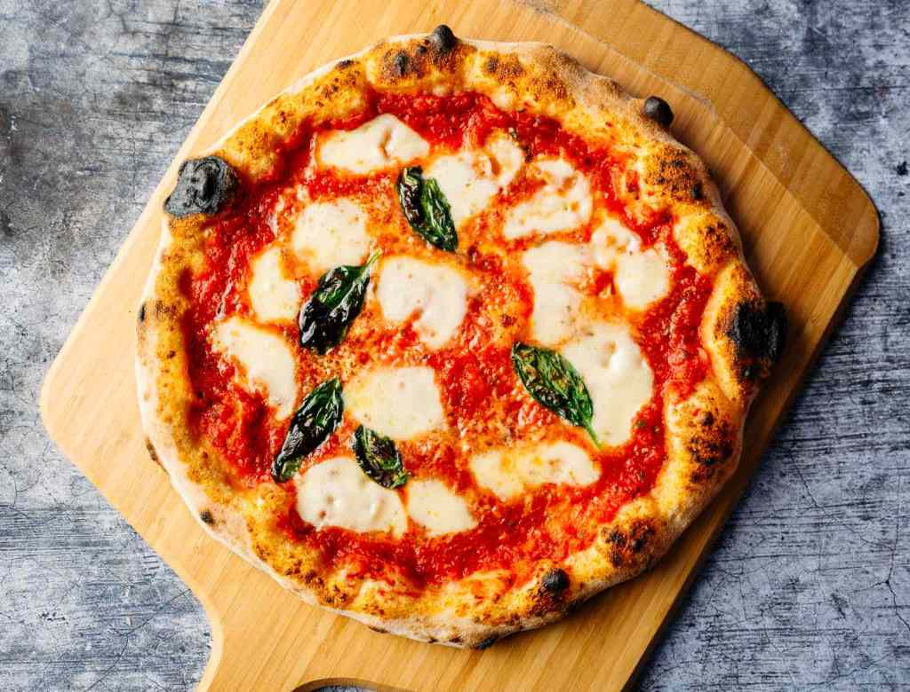

Pizza

Description
A classic margherita pie, just like Nonna used to make. A light and fluffy crust, sweet tomatoes and bubbly mozzarella,
garnished with fragrant basil. Tasty and timeless.
Ingredients
- 9 ounces of Classic Pizza Dough
- Flour
- 3 ounces of crushed tomatoes
- 3.5 ounces of fresh mozzarella
- 1 teaspoon extra-virgin olive oil
- About a handful of basil
Steps
- Heat oven up to 930 degrees Fahrenheit
- Use flour to dust the work surface and the pizza peel
- Stretch the pizza dough ball out to 12 or 16 inches and lay it out on the pizza peel
- Top with sauce, followed by the mozzarella and olive oil (leave room for the crust)
- slide the pizza off the pizza peel and into your oven and cook for one to two minutes (rotate pizza every 20 seconds)
- Once cooked, remove the pizza from the oven and top with whole, fresh basil leaves